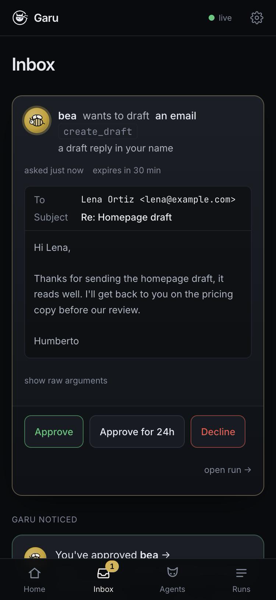

Any model. Any MCP tool. Every action goes through a policy you wrote — allow, ask, or block — recorded, cost-capped, and sandboxed. Garu is systemd for your agents.
The 45-second launch video (sound off here). Tomay preps your day; Bea files your mail and drafts replies that wait for one tap, and can't send. The control room's surfaces rebuilt for video; the meetings and emails are examples.
OpenAI's Dots and Meta's Muse run all day and act for you — closed, one vendor, unavailable in much of the world. Garu is the open version, built around the part they treat as an afterthought: control.
Rules by tool name and by argument: let an agent file mail but ask before each draft, write only briefs/2026-*.md, block everything else. Tools that can never pass policy are never shown to the model.
When a rule says ask, the run pauses. You see the email as an email, the file as a file, the draft as a draft. Approve once, approve for 24 hours, or decline. Silence is a deny.
Approve the same thing three times and Garu proposes the narrowest rule that covers exactly what you approved, and writes it into your file when you say so. Comments preserved.
Every model turn, tool call, decision and approval in an append-only log, one file per run. Replay any run as a timeline, in the browser or with garu log.
Cost is estimated from real token counts at list price. A run stops the moment it would cross maxCostUsd. Local models bill $0 and still show what it would have cost.
Gemini on the free tier, Claude, or Ollama on your laptop — one line to switch. Each tool server can run in its own Docker container: no network, read-only root, only the agent's workspace mounted.
An agent only touches the world through the Model Context Protocol. The policy kernel sits between the model and every MCP server. The flight recorder sees everything the kernel sees. The control room is a view over those files. There is no database.
This is Bea, one of the agents in this repo: at 7:15 on weekdays she files the day's mail under four labels and drafts the replies. Reading and filing are allowed, every draft asks you, and her Gmail server has no send tool at all.
name: bea persona: { kind: bee, tagline: "Sorts the inbox so you don't have to." } model: gemini/gemini-3.5-flash-lite triggers: - cron: "15 7 * * 1-5" budget: { maxCostUsd: 0.05 } tools: - name: gmail # Garu's own Gmail server command: node args: ["packages/mcp-google/dist/index.js", "gmail"] auth: oauth # sign in once: garu auth oauth: issuer: https://accounts.google.com clientId: ${GOOGLE_CLIENT_ID} clientSecret: ${GOOGLE_CLIENT_SECRET} scopes: [https://www.googleapis.com/auth/gmail.modify] policy: - tool: "gmail.search_threads" # reading: always fine action: allow - tool: "gmail.get_thread" action: allow - tool: "gmail.label_thread" # filing comes off in one click action: allow - tool: "gmail.create_draft" # words in your name: you see each one action: ask - tool: "*" action: block prompt: | You are Bea. Sort Humberto's inbox from the last day…
Rules are read top to bottom. Nothing matching means ask — never a silent allow.
when predicates (eq, matches, gt, in, …) allow a tool for one host or one path and block it everywhere else.
A tool no rule can ever allow is not offered to the model, so it never wastes a turn trying.
${VAR} is read from .env at run time. The model never sees your keys, and a server that signs in gets only a one-hour token, never the client secret.
garu validate lints itUnreachable rules, bad globs, a missing key — caught before the agent runs.
The control room installs to your home screen. It talks to the same garu ui on your computer over Tailscale — HTTPS, only your devices, nothing exposed to the internet. A push arrives when an agent pauses; one tap lands on the review card.
tailscale serve --bg 4000 # → https://your-mac.tail1234.ts.net # Safari → Share → Add to Home Screen

Node 22+ and a free Gemini key from aistudio.google.com (no card). Or skip the key and run a local model through Ollama for $0.
git clone https://github.com/humbertovillanueva/garu && cd garu
npm install && npm run build
printf 'GEMINI_API_KEY=your-key\nGARU_USER=YourName\n' > .env
npm run garu -- ui --up --as YourName # control room at http://localhost:4000
Click pip in the sidebar and press Run now. It reads a notes file, pauses to ask before writing a summary, and you approve from the browser. Then type a message to it.
The real agents, Tomay (your day, from your calendar and email) and Bea (your inbox, sorted, replies drafted), need a free Google Cloud project once: the Google guide takes about fifteen minutes.
npm run garu -- run examples/nook/Garufile.yaml # fully local with Ollama, $0 npm run garu -- run examples/vault/Garufile.yaml # tools in Docker, network off npm run garu -- log pip # replay the flight recorder